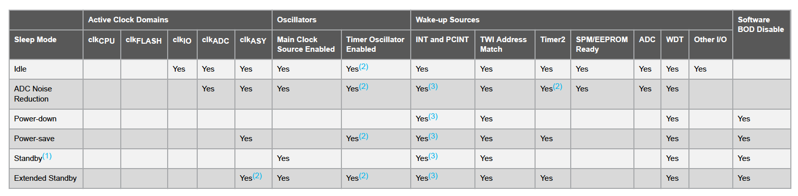
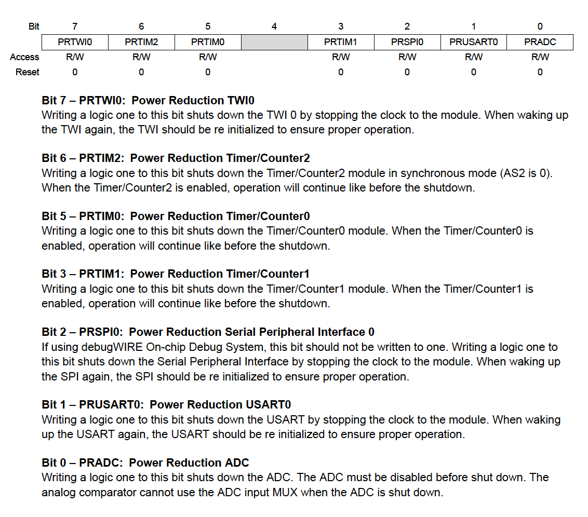

MCU power management
Atmega328P-PU employees a 5 volt power input, it can also be powered by a 9V battery by using a voltage regulator. A 1200 mAh 9 volt battery even cannot support an Arduino Uno for one day because it uses about 45 mA current [1].
Atmega328P-PU employees a 5 volt power input, it can also be powered by a 9V battery by using a voltage regulator. A 1200 mAh 9 volt battery even cannot support an Arduino Uno for one day because it uses about 45 mA current [1].
Sleep modes can disable unused modules in the MCU to save power. Differen sleep modes disable different modules. The Atmega328p provides 6 sleeps mode. The control flow that involves sleep mode is normal mode -> (sleep) -> sleep mode -> (wake up) -> normal mode. To make a MCU enter sleep mode,
To wake up a sleep, an interrupt or reset is required. When the interrupt comes in, the MCU goes to the interrupt routine and returns to the immediately after the SLEEP instruction that cause the MCU sleep. The waking up process takes 4 cycles + star-up time (set by SUT fuse bits) + executes the interrupt routine to go back.
The wake up condition is usually set before writing SMCR. Wake up sources can be external interrupts, timers, Watch dog and so on. The following picture shows different sleep modes and wake-up sources.[2]

Power down: All clock is halted, which means CPU core and all periheral devices that require the clock signal cannot work. Only the external interrupt can work. So the external interrupt, external reset, BOD reset, watchdog reset, watchdog interrupt and TWI address match can wake up the MCU.
* Because clock sources stop working, only the low level interrupt is allowed to use.
* When using a low level triggered external interrupt, the low level must hold for a while until the MCU completely waked up.
Power save:Same as power down, but the Timer/Counter2 keeps running if it is enabled. Because timer/counter2 can use either synchronous clock or asynchronous clock (TOSC1), one of these clock source should keep working when selected.
Modules run in all sleep mode: BOD, ADC, Watchdog timer and on-chip debug system. To stop some of them in sleep mode, it would save power. The Power Reduction Register (PRR) provides a method to stop the clock to individual peripherals. Usually, the individual periheral device should be disable before shutting down the clock.
BOD disable: BOD can be software disabled during sleep if it is enabled by fuse bit. Set MCUCR.BODS = 1 will disable it immediately after entering the sleep mode. It will automatically re-enable after wakeup. If BOD is disabled, the wakeup take an extra approximate 60us to ensure the BOD is working correctly (e.g. like the time-out delay).
* This feature is only avaliable for atmega328p.
The following picture show the PRR register.[2]

AVR sleep library #include <avr/sleep.h> defines a set of macros used to control the AVR microcontroller's sleep mode. This library is compatible with all AVR microcontrollers, but only Atmega328p related sleep functions are introduced in this section.
Set sleep mode
//#include <avr/sleep.h>
#define _SLEEP_CONTROL_REG SMCR
#define _SLEEP_ENABLE_MASK _BV(SE)
#define set_sleep_mode(mode) \
do { \
_SLEEP_CONTROL_REG = ((_SLEEP_CONTROL_REG & ~(_BV(SM0) | _BV(SM1) | _BV(SM2))) | (mode)); \
} while(0)
//#include <avr/io.h>
#define SLEEP_MODE_IDLE (0x00<<1)
#define SLEEP_MODE_ADC (0x01<<1)
#define SLEEP_MODE_PWR_DOWN (0x02<<1)
#define SLEEP_MODE_PWR_SAVE (0x03<<1)
#define SLEEP_MODE_STANDBY (0x06<<1)
#define SLEEP_MODE_EXT_STANDBY (0x07<<1)
Sleep enable
// Set the SMCR.SE = 1
#define sleep_enable() \
do { \
_SLEEP_CONTROL_REG |= (uint8_t)_SLEEP_ENABLE_MASK; \
} while(0)
Sleep disable
// Set the SMCR.SE = 0
#define sleep_enable() \
do { \
_SLEEP_CONTROL_REG |= (uint8_t)_SLEEP_ENABLE_MASK; \
} while(0)
Call Sleep instruction
// call sleep instruction, go to sleep
#define sleep_cpu() \
do { \
__asm__ __volatile__ ( "sleep" "\n\t" :: ); \
} while(0)
Disable BOD during sleep
#define BOD_CONTROL_REG MCUCR
#define sleep_bod_disable() \
do { \
uint8_t tempreg; \
__asm__ __volatile__("in %[tempreg], %[mcucr]" "\n\t" \
"ori %[tempreg], %[bods_bodse]" "\n\t" \
"out %[mcucr], %[tempreg]" "\n\t" \
"andi %[tempreg], %[not_bodse]" "\n\t" \
"out %[mcucr], %[tempreg]" \
: [tempreg] "=&d" (tempreg) \
: [mcucr] "I" _SFR_IO_ADDR(BOD_CONTROL_REG), \
[bods_bodse] "i" (_BV(BODS) | _BV(BODSE)), \
[not_bodse] "i" (~_BV(BODSE))); \
} while (0)
Sleep helper function
#define sleep_mode() \
do { \
sleep_enable(); \
sleep_cpu(); \
sleep_disable(); \
} while (0)
The following C code show an example of power down mode that is woken up by the external interrupt 0. Source code
#define F_CPU 16000000UL
#include <avr/interrupt.h>
#include <util/delay.h>
#include <avr/io.h>
#include <avr/sleep.h>
void powerDown(void)
{
set_sleep_mode(SLEEP_MODE_PWR_DOWN);
sleep_mode();
}
void on_board_led(){
PORTB |= 0x20;
_delay_ms(1000);
PORTB &= ~0x20;
}
ISR(INT0_vect){
}
int main(){
DDRB |= 0x20;
DDRD &= ~0x04; // INT0 pins PD2 output
EICRA &= ~0x03; // INT0 level low trigger
EIMSK |= 0x01; // enable INT0 interrupt
sei(); // enable global interrupt
while(1){
powerDown();
on_board_led();
}
}